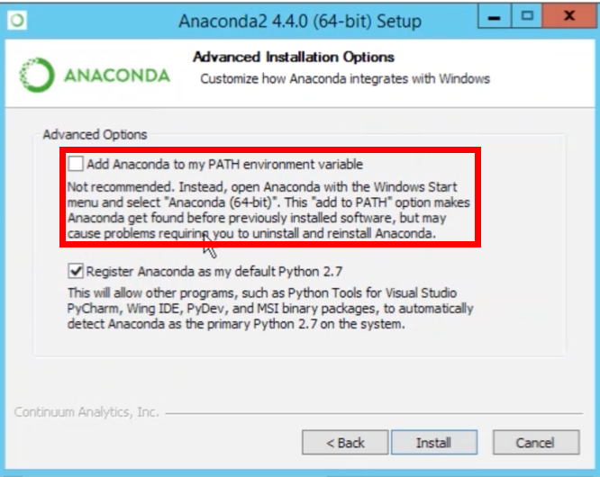

Wednesday, April 24th 2019
Location: Newman Alumni Center Executive Boardroom
9:30am - 12:30pm - Workshop 1
Modelling Hogwarts. A Speed Introduction to Digital Text Analysis.
Taught by Mike Kestemont & Enrique Manjavacas
In this three-hour workshop, we offer a speed introduction to a number of established approaches in digital literary studies. The case studies are taken from the universe of Harry Potter but the methodologies are generic enough to be applicable across different domains of the Humanities. We will focus on the following two applications: 1. Network analysis: Fanfiction is intriguing because of the new combinations of characters and themes it introduces. We will use network analysis (Gephi) to model these remarkable (and often radical) shifts in attention with respect to the original canons. This macro-level approach can be considered a modern form of reader response analysis. 2. Stylometry: Authorship attribution is a popular research topic in stylometry, the quantitative study of writing style. We will use “Stylometry with R” to replicate a famous case study: J.K. Rowling secretly published a novel under the male pseudonym Robert Galbraith, but Patrick Juola unmasked the author using stylometry. We will analyze how genre and literary influence are key factors in modelling an author’s writing style.
The workshop will be highly hands-on and people are expected to bring their laptops on which they can install new software. Installation instructions for the software will be sent out to the participants in the weeks before the event. All data will be distributed on-site.
INSTRUCTIONS BEFORE THE WORKSHOP
For next week’s workshop, please bring your own laptop and make sure that it is fully charged in the morning – and bring your charger with you (as we might have limited charging facilities). Make sure that you know your machine’s passwords etc., as you will want full installation rights on the machine. All software we will use is free and cross-platform, but we would like to ask to you to run the installation procedures below before the workshop starts to save time. All data will be shared when the workshop starts.
1) Python
Download and install the Anaconda distribution of Python, available at https://www.anaconda.com/distribution/#download-section, and select the version that fits your machine. Additionally, make sure to select Python 3.7. (Whatever you do, do NOT select Python 2.7). As you run through the installation wizard, you can always click “Yes”, “Next”, etc. but for Windows users: please make sure that in the installation wizard, under “Advanced options” at the end, you select the option that adds Anaconda to your PATH environment variable. Screenshot in the attachment. This option is not checked by default.

2) R
- (Mac OS only: install or update your XQuartz: https://www.xquartz.org/)
- Install R: https://www.r-project.org/
- Install a decent cross-platform text editor, such as Sublime (https://www.sublimetext.com/)
3) Gephi
- First install Java (or more correctly: Java SE Runtime Environment 8). Pick the right version for your machine from: https://www.oracle.com/technetwork/java/javase/downloads/jre8-downloads-2133155.html.
- Only then, install Gephi: https://gephi.org/
Feel free to contact us should you run into any issues. We are very much looking forward to working with you.